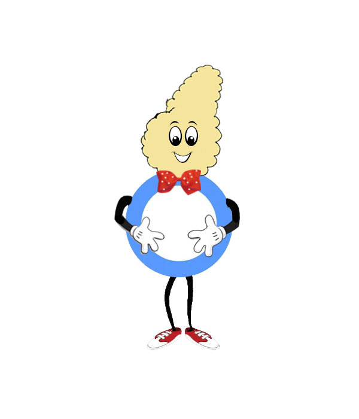
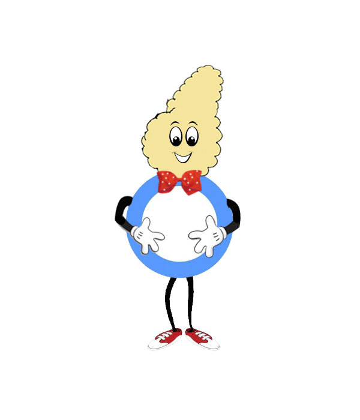

تمارين المرون
الاسئلة
تمارين المرونة مثل تمارين التمدد سوف تجعل المفاصل مرنة وتقلل من فرص الإصابة أثناء التمارين الرياضية. التمدد البسيط من 5 إلى 10 دقائق سوف يهيأ جسدك ويحميه ويجعلك مستعد لأنشطة الإيروبيك.


• تقليل وتنظيم نسبة السكر في الدم.
• تقليل وتنظيم نسبة الدهون في الدم.
• تساعد على تخفيف الوزن والمحافظة على الوزن المثالي.
• تقليل من كمية الدواء الذي يستخدمه المريض.
• تساعد على تقوية وبناء الجسم والعضلات.
• تزيد من نسبة استخدام الإنسولين في الجسم وذلك بزيادة عدد مستقبلات الإنسولين.
• تقليل من مقاومة الجسم للإنسولين.
• تحسين الحالة النفسية للمريض.
• يبدأ البرنامج الرياضي بشكل تدريجي ثم تزيد مدة وكثافة التمارين للوصول إلى المعدل) الحد( المطلوب والمناسب لكل فرد.
• يجب تهيئة الجسم للرياضة وذلك بالبدء بتمارين التسخين لمدة 5 الى 10 دقائق، كما يجب إنهاء الجلسة بتمارين الاسترخاء لمدة 5 إلى 10 دقائق.
• يجب تخصيص وقت للراحة يتراوح مابين 30 إلى 90 ثانية عند الحاجة إلى ذلك.
• يجب عدم ممارسة التمارين في حالة المرضى أو الإصابات الناتجة عن الرياضة.
• يجب استشارة الطبيب قبل ممارسة أي برنامج رياضي.
• يجب قياس نسبة السكر في الدم قبل وبعد التمارين، كما قد يكون ضرورياً إجراء تحليل أثناء الرياضة.
• يجب حمل قطع من السكر أو الحلوى لاستخدامها في حالة الهبوط.
• يجب حمل بطاقة تعريف تدل على أن الشخص مصاب بالسكر.
• يجب حقن الإنسولين في مناطق الجسم التي لن يستخدمها المريض أثناء التمارين.
• المرضى المعتمدين على الإنسولين، يجب عليهم ممارسة الرياضة في نفس الوقت يومياً.
• إذا كانت نسبة السكر أقل من 100 مج 5.6 مليمول يجب تناول ما يعادل 20 جم من النشويات قبل ممارسة الرياضة.
• إذا كانت نسبة السكر في الدم مابين 100 - 150 مج 5.6 - 8.3 مليمول، يمكن ممارسة التمارين الرياضية وتناول وجبة خفيفة بعدها.
• يجب عدم التوقف عن أخذ الإنسولين وتناول 10 - 20 جم من النشويات قبل
كل 2/ 1 ساعة من التمارين مع مراقبة مستوى السكر في الدم.
بدائل ال 20 جم من النشويات :
• 1/4 من الخبز على شكل ساندوتش جبنة أو بيض أو تونة.
• 1 قطعة من الكرواسان جبنة أو زعتر
• 1 قطعة بسكوت قمح سادة 200 + مل من الحليب أو اللبن القليل الدسم.
• قطعة من الفاكهة المتوسطة الحجم 200 + مل من اللبن أو الحليب القليل الدسم.
• 3 تمرات 200 + مل من اللبن أو الحليب الدسم.
• كاس صغير من العصير الطازج أو العصير غير المحلى 200 مل.
تمارين المرونة مثل تمارين التمدد سوف تجعل المفاصل مرنة وتقلل من فرص الإصابة أثناء التمارين الرياضية. التمدد البسيط من 5 إلى 10 دقائق سوف يهيأ جسدك ويحميه ويجعلك مستعد لأنشطة الإيروبيك.

تمارين الإيروبيك تحسن من معدل نبضات القلب و التنفس و من عمل العضلات. ثلاثون دقيقة فقط هي ما تحتاجها لممارسة الرياضة يوميا ، ويفضل خمسة أيام في الأسبوع على الأقل. إذا لم تكن نشط في الآونة الأخيرة يمكنك البدء من 5 أو 10 دقائق في اليوم والعمل لزيادة الوقت في كل أسبوع. مثال على تمارين الإيروبيك تشتمل على المشي ، الركض ، السباحة ، ركوب الدراجة ، تمارين الإيروبيك المائية.
.تقوم تمارين التقوية على تقوية العظام و العضلات و إحراق الكثير من السعرات الحرارية. أمثلة تمارين التقوية : رفع الأوزان و الأثقال المختلفة.